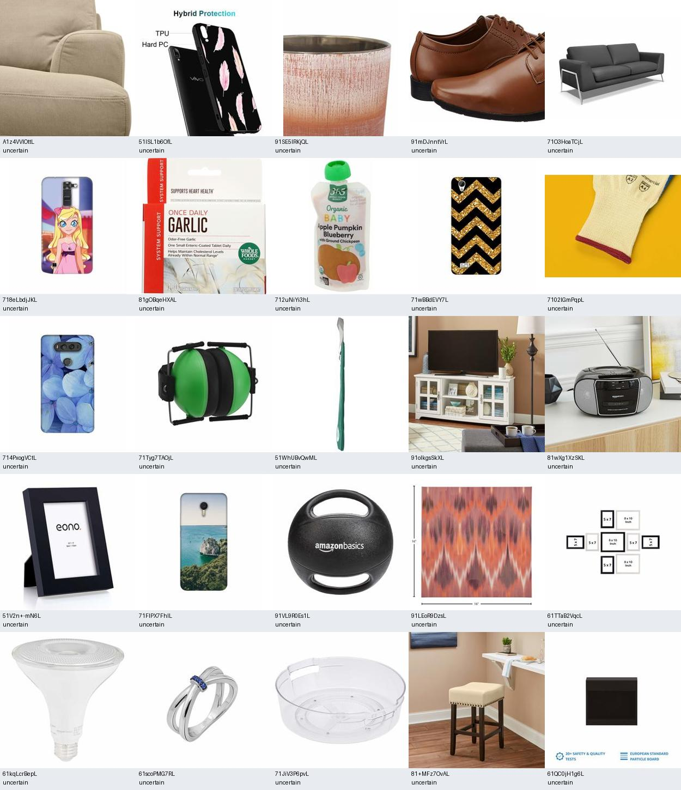
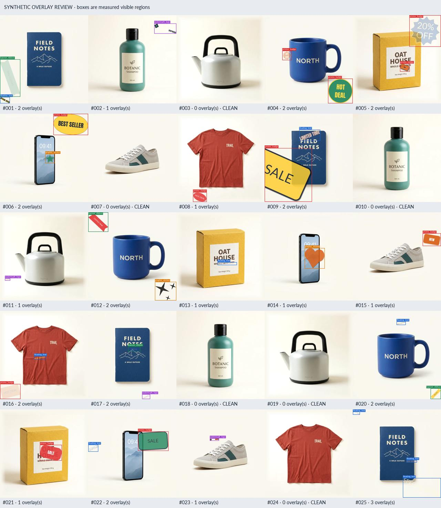
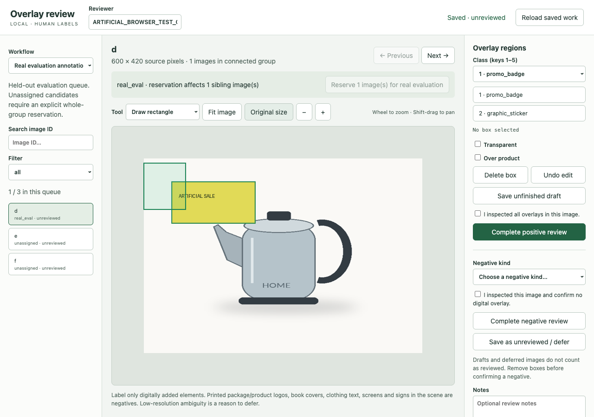
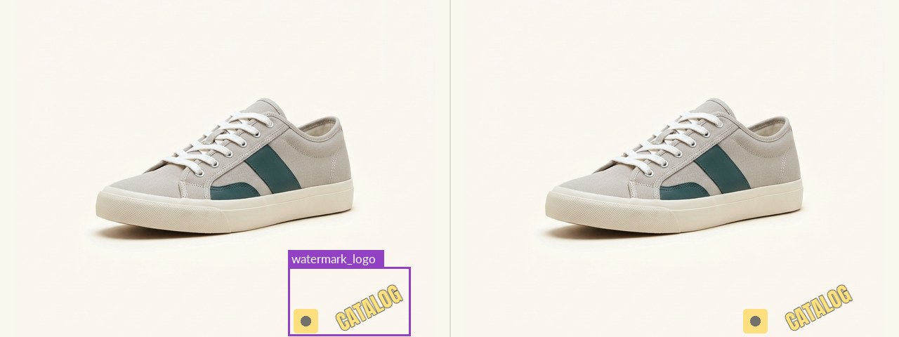

ML development with coding agents
Enrique Munguía · 30/10/2026
→ next ← back N notes F fullscreen ? help
Decide what the model must ignore: packaging text, product logos, book covers, screens, scene signs.
Only digitally composited elements count. Write that sentence down before the first line of code.
Carries the rule everywhere: generator, labeling tool, evaluator, and every report it writes.
Builds the tooling, runs the experiments, records everything, writes the report.
Defines the problem, judges the data, labels, sets thresholds, decides when to stop.
The part of each station that can run unattended once the rules are written down.
Hard rules go in writing. Short, imperative, and mostly do not
.
Each milestone ends at a gate where a person looks before the agent continues.
Reads both files at the start of every session. Writes the handoff at the end of it.

Found Amazon Berkeley Objects. Wrote the downloader and verified all the files.
Review sheets for every batch. Same seed, same 1,000 images, every run.
Look at the sheets. Decide whether this data is the problem you are solving.

Built a generator for all five classes: shapes, fonts, placement, opacity, occlusion, clipped boxes. 108 tests.
Every image is replayable from its record. A single box with bad coordinates, like zero size or a box outside the image, fails validation for the whole dataset.
Look at the contact sheet. Bad synthetic data makes the experiment look successful while teaching the wrong problem.

Standard-library server, SVG canvas, keyboard shortcuts, drafts, atomic saves with backups. No build step.
Reserving an image reserves its whole product group, so nothing lands in both training and evaluation.
Manually labels the images by drawing boxes.
Refused to mark anything clean or invent labels because of the rules.
Labels by hand and provides confidence to the training data.
Next: pre-label with the current model, humans verify. Judge with a second model against independent references.
Pretrained detector first. Do not begin with JEPA or custom representation learning.
Written in the plan.
COCO to YOLO conversion, grouped 80/10/10 splits, training script, stable prediction JSON.
Blocks real eval images from being converted to training data. Images from the same product stay together in one split.
Set the thresholds. If the pipeline cannot overfit a handful of images, nothing downstream means anything.
The gate is defined in code for fast verification. It records checkpoint and dataset hashes.
Only after the pass: a 20-epoch grouped baseline on 100 / 40 / 20 images. Results were weak (mAP@0.5 0.55, recall 0.43).
A vision-language model reads an image and answers in text. Before paying for labels and training, ask one to find the overlays with no training at all.
Built the pilot in a day: frozen sample, cached VLM requests, a grading page, metrics with human and model references kept apart.
Graded 36 images. Noticed the OCR text was bad. The agent wrote that down as a limitation of the whole result, not a footnote.
Same images, same grading file, any model. Rerun the comparison when a new model ships.
On this problem, a Gemini 3 model has reached 0.95+ precision and recall in similar tasks. Accuracy is not the issue. The bill for a whole catalog is.
Read token counts from the pilot's 53 cached calls, then sent the 36 images a single yes/no question: 838 tokens, $0.000035 each.
Sets the budget and decides when to escalate missed examples.
Every escalated image comes back labeled and joins the next training lap. The tail shrinks.
Did all of this because one line in AGENTS.md asked for provenance. Nobody specified the list.
Datasets and runs refuse to overwrite. Replay verifies pixels. Gates verify hashes.
Trusts a result weeks later, and knows a seed doesn't guarantee identical weights on GPU.
Wrote the evaluator: COCO AP, fixed-threshold precision and recall, presence metrics, negative false-positive rate, per-class AP.
AP ranks from confidence 0.001; the operating point is 0.25. That explains the gap. Do not tune the threshold on this test set.
Pick the operating point on validation. Decide which misses cost money.

Exports every error with ground truth beside prediction, sorted into buckets: small overlay, graphic only, transparent, over product, physical-text false positive.
Look at the error images yourself. A bucket says where to look, not why the model failed.
The bucket counts become the next hypothesis list.
Runs the inner loop: read buckets, propose a change, retrain, re-evaluate, write the report.
Approves hypotheses. Owns the stop condition. Looks at every new review sheet.
Let it run a few iterations overnight inside the guardrails. Read the morning report.
The review page one person needed becomes the tool everyone labels in. Same keys, same negatives list, every project.
People and agents pull data through one shared server instead of each writing their own downloader.
Send the inference and a grading prompt. An LLM grades it. Anyone can score a model run without building a grader.
Small, frozen, labeled by people. Every model change runs against it first. Quick, and you trust the result.
A short file of imperatives the agent reads every session. The strongest ones say what not to do.
Every milestone ends where a person looks, or where a check must pass. Make the check code when you can.
The agent ends each session by rewriting the start of the next one: state, counts, the exact next command.
It will optimize whatever you wrote down. If "good enough" is not written, it does not exist.
Ask for a labeling page, get atomic saves, backups, file locks and a 41 KB plan. Say how small is the task.
It can inspect a contact sheet. It cannot know that phone cases are overrepresented in your catalog.
No memory between sessions. Without a handoff it rediscovers, repeats, or quietly changes scope.
Left alone it would have invented clean sources on day one. The rule file is what stopped it.
It launches a long training run as casually as a test. Make it prove the pipeline on 64 images first.
github.com/enrique7mc/from-dataset-to-model · this deck
linkedin.com/in/enrique7mc · questions & feedback